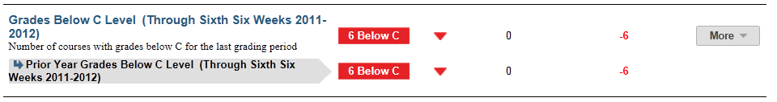

Dashboard Metrics


Grades Below C Level
Background
Student Dashboard Metrics
Because of the need to closely monitor course performance, many school districts across the nation, including Chicago, Dallas and New York, have incorporated metrics on course performance and associated credit accumulation into their internal performance management dashboards. In addition, during focus groups conducted with educators, the Class Grades Below C Level metric, as presented in screen shots of the student dashboard, was considered useful by over 90% of those surveyed.
Primary Metric
- Grades Below C : the number of courses for which the student’s most recent course grade is below C, with trend comparison to the student’s courses below C for the grading period prior to the most recently completed.
Related Metrics
- Class Grades – Failing: the number of courses with failing grades out of total courses taken at the end of each grading period, with a trend comparison to the student’s course failures as of the prior grading period.
- Class Grades – # of Course Grades Dropping 10% or More: the number of courses out of total taken for which the student’s most recent course grade is dropping 10% or more from the prior grading period, with a trend comparison to the student’s course declines as of the prior grading period.
- Credit Accumulation: cumulative number of credits earned as of the prior grading period compared to minimum credits required at mid-year and at the end of each year under the default state graduation plan.
- On Track to Graduate: whether or not a student is on track to meet the 4x4 graduation requirement of earning one credit per year in each of the four core subjects.
- High School Graduation Plan: reports the student’s intended graduation plan and whether or not the student is below, at or above meeting credit requirements in all eligible courses for their intended plan.
User Interface
Dashboard Example
Figure 1 shows the Grades Below C metric as seen on the student dashboard.

Figure 1 Ed-Fi Grades Below C Metric
Visibility Rules
- The metric must have at least one completed grading period of information; the metric is grayed out until the first grading period is completed and grades have been recorded.
- The number of classes under consideration is the number of classes in which the student is currently enrolled.
- If the current period is the first grading period, there is no trend for current period and no trend for previous period.
- Grading periods are configurable, typically either six or nine weeks.
Status Definition
The Status indicator is determined by campus-specific thresholds (campus goals) which are set at the district level. The recommended default threshold is one or more courses with a grade below a C or 75% level (D or F) for the last grading period.
Metric Indicator | Trend Comparisons | |||
Metric Name | Sub-metric Name | Metric Status Indicator | Compares: | To: |
Grades Below C or 70% Level | not applicable | Red (Below) = If one or more student course grades is less than 75% Green (On Track) = If student course grades are all above 75% | Last grading period | Prior grading period |
Trends
Table 3 shows the trend indicator for the Grades Below C metric. It shows the progress of the student compared to the prior grading period. The trend displays only if data for two or more grading periods is available.
Trend Indicators: Objective is to indicate Grades Below C or 70% | |||
| Up green | If there is an increase in the number of grades below C (75%) | |
| Unchanged | If there is no change in the number of grades below C (75%) from an earlier grading period | |
| Down red | If there is a decrease in the number of grades below C (75%) from an earlier grading period | |
The trend does not display for the first grading period since data for two grading periods is not available.
Periodicity
The data is most actionable when loaded at the end of each grading period after grades are posted. Grading periods vary by state and district.
Recommended Load Characteristics | |
Calendar | Throughout the school year |
Frequency of data load | Grading Period |
Latency | Grading Period |
Interchange schema | Interchange-StudentGrade.xsd |
Tooltips
The standard tool tips for the metric definition, column headers, and help functions display for this metric.
The following are tooltips specific to the Grades Below C metric:
 is ‘No change from the prior period'
is ‘No change from the prior period' is ‘Getting worse from the prior period’
is ‘Getting worse from the prior period’ is 'Getting better from the prior period'
is 'Getting better from the prior period'
Business Rules
Data Assumptions
- Student grade information is generally available for multiple grading periods for the current year. If it is not available, the values are blank.
- Grades are numeric or letter-based.
- District sets the value that drives the student thresholds (numeric and/or letter grade).
- In order to view any trend indication, grades for two or more grading periods must be present.
- The final grades will be used once they are available. The trend however will be the comparison of the last two grading periods.
Computed Values
Table 5 defines how values are calculated. The result of the calculation displays in the Status column.
Metric Values | |
Grades Below 70% Level | (Number of course grades below 75% / (Tot al number of courses student is enrolled in) This metric is shown in fractional form. For example, 3/7 = student is failing three out of seven classes |
Data Anomalies
Anomalies
Best practices is to use footnotes to address these anomalies:
- Loading of data from each grading period
- Late enrollees may not have previous grading period grades from another school
- Missing transcripts for transfer students
- In the 1.5 release districts were given the ability to set the threshold for "below C" manually in the system administrator dashboard settings. Changes will appear after the next successful build.
- Though Grades Below C is a secondary metric, the district view is currently including elementary schools. The data appearance depends on how a district's elementary schools report grades.
- If a student does not yet have a first grading period grade, trend for this metric is based on the prior year final grade.
- Prior year metric values are based on the total of final grades below C. Prior year trends are based on the last grading period metric value vs. final grading period values.
Footnotes
Footnotes are used to provide addition data information concerning the metric. Footnotes are sequential for the entire page. Therefore, a metric's footnote may not begin with the number 1.
The following footnotes appear below the metric:
- Best practice is to footnote students that are not present for a full grading period.
Date of Refresh
Best practice is for the date of last data refresh to appear next the metric in the following format:
(Through Second Six Weeks)
Implementation Considerations
Student Identity
Maintaining a correct and consistent student identity is at the center of any education data system. Most systems use some sort of unique identifier. However, sometimes this identifier is entered incorrectly or sometimes different systems use different identifiers.
The UDM XML supports the interchange of multiple types of identifiers. The StudentReference is a complex type within the UDM to maintain the referential integrity of the student (that is, ensuring that the data associated with each student is accurately associated with the right student). The complex type of the student reference assists with implementing the accurate matching algorithm to identify a student by utilizing any of the individual attributes (e.g., Student Unique State ID, Student ID, Campus Local ID (with Campus ID), Name and Birth Date). For example, if the Student Unique State ID is unknown, you can find the student’s identity by their Student ID, First Name, Last Name and Birth Date.
Missing Transcript Information
If the student has incomplete data in their course transcript from the previous grading period, the trend is not available.
Numeric or Letter Grading System
The metric should support both numeric and letter grading systems.
Late Enrollments
For late enrollment students, consider whether or not there is previous grading period data to compare to the latest grading period.
Frequency of Uploading Data
The metric computation implementation may vary depending on the periodicity of loading the data.
Source of Data
Course grades may be available from more than one source (e.g., SIS or Grade book application). The implementation should designate which source is authoritative and use that source to drive this metric.
Thresholds
Best practice is to set the thresholds for each campus at the district level. A secure mechanism is required to allow the district to set and maintain those thresholds.
Drill Downs
Description
"+More" drill down goes to the Student Academic Profile page which provides current and historical course level grades. This aids educators in identifying courses where the student is performing below a C level.
Drill Down View
Table 6 list the drill down views that are recommended for this metric.
| Courses | Display the current courses | |
| Historical | Comparison to prior grading periods, semesters, and years |
Business Rules
The Historical Graph allows the user to see historical data across multiple timeframes. As time passes, there are many bars to be displayed; therefore, the slider on the bottom allows the user to adjust the number of bars displayed as well as the time period shown. The timeframes for this metric were chosen based on educator feedback.